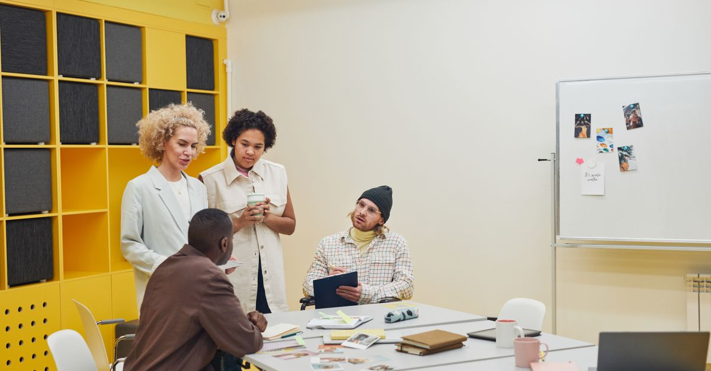
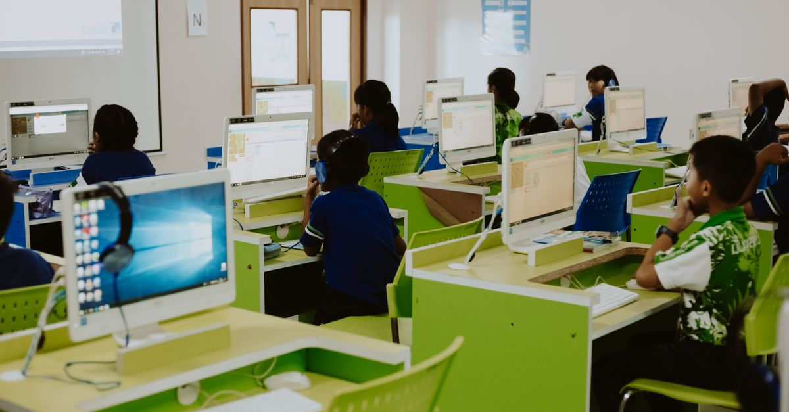

Un solo lugar para informar, escuchar y decidir — para los ~150 agremiados del sindicato.
Comunicados, listas y acuerdos dispersos que se pierden con el tiempo.
El QR compartido por WhatsApp permitió falsificar asistencias.
No se sabe quién leyó un comunicado ni quién confirmó una convocatoria.
Conteos lentos y sin forma sencilla de comprobar resultados.
La cara del sindicato: noticias, comisiones, convenios, transparencia y galería.
Cuenta personal: credencial digital, votaciones, buzón y comunicados internos.
Para quienes crean y revisan información: publicar, medir y administrar.
En servidor independiente, con la identidad del STSPE y de la UTEQ, y contenido público o exclusivo según el nivel de cada quien.

Los QR de sesión fallaron porque bastaba reenviarlos. Aquí se invierte el proceso:

Cada comunicado registra su lectura.
Confirmación explícita para convocatorias.
Recordatorio dirigido solo a los pendientes, con un clic.
Visible con nombre, en un muro moderado.
Solo lo ve el comité ejecutivo.
Se comprueba que es un agremiado real — sin revelar quién.
Todo mensaje genera un folio de seguimiento con estados: recibido → en atención → resuelto.

Responde dudas frecuentes 24/7 y escala al delegado con folio cuando no puede resolver.
Correo — y opcionalmente WhatsApp — para urgentes, votaciones y convocatorias.
Servidor independiente, respaldos automáticos, dominio propio.
Graphic Genius · davidgerardom@gmail.com